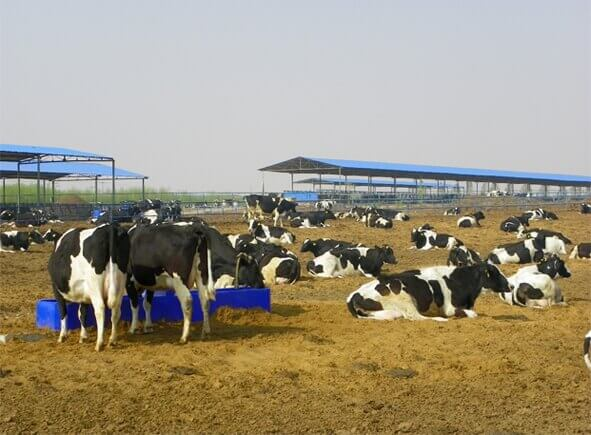

宁夏香岩产业集团有限公司是一家集有机、天然农副产品、果蔬、林木、饲草种植，收购、包装、销售，新产品引进、畜牧养殖、产品深加工和酿酒葡萄种植深加工于一体的多元化农业产业集团公司。是由全国劳模、全国农村优秀人才、全国农村青年创业致富带头人标兵、全国青年企业家协会理事杨飞一手创立的。集团公司下辖中卫市香山瓜果流通有限责任公司、中卫市现代飞翔大漠生态农业有限公司、中卫市沐沙畜牧科技有限公司、中卫市铁牛农机作业服务有限公司和四家农民专业合作社、澳大利亚润泽农牧业发展有限公司。其中，中卫市香山瓜果流通有限责任公司于2009年被评为自治区级产业产业化龙头企业。
公司发展至今，董事长杨飞始终坚持“勤、诚、智、信”的经营理念，实行“公司+协会+合作社+基地+农户”的生产经营模式，以品质打造品牌，通过整合优质资源、实施科学养殖，最终形成“打造绿色有机产品，筑造健康消费长城”的产业发展格局。经过多年的不懈努力，公司先后在福建、成都、重庆、西安、郑州、武汉、长沙等全国30多个大中型城市设立直销窗口，并成功开辟了港、澳等市场。2008年，瓜果公司成为奥运会唯一一家西瓜指定供应商。2011年获得自治区重点龙头企业的称号。通过自身品牌的建设，现已拥有“香山硒砂”、“香山绿豪”、“香岩宝”、“挹沙”“沐沙”“沐沙庄园”“香岩”七个商标。其中“香山硒砂”已成为“中国驰名商标”，其产品也获得了 “中国名牌产品”的美誉。并先后通过了国家“绿色食品认证” “有机食品认证” “ISO9001质量体系认证”。
技术支持：唯简物联 联系电话：15825369999